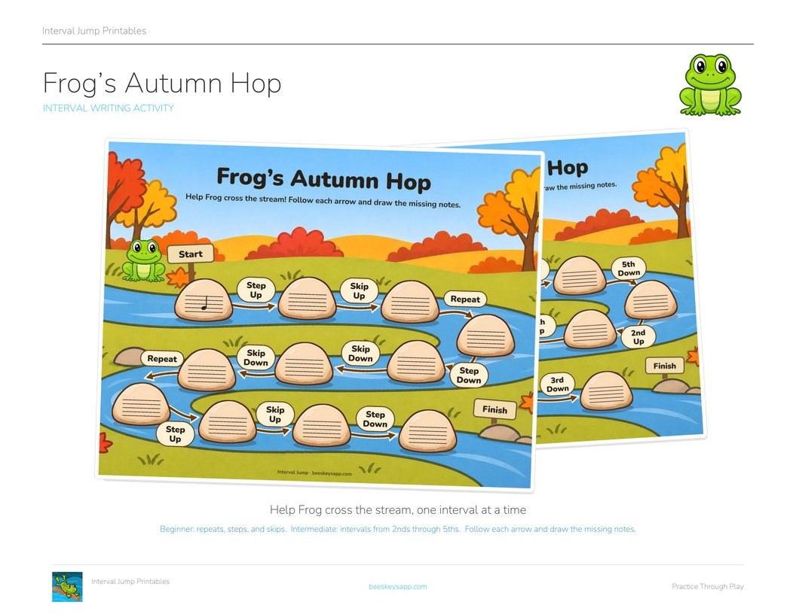
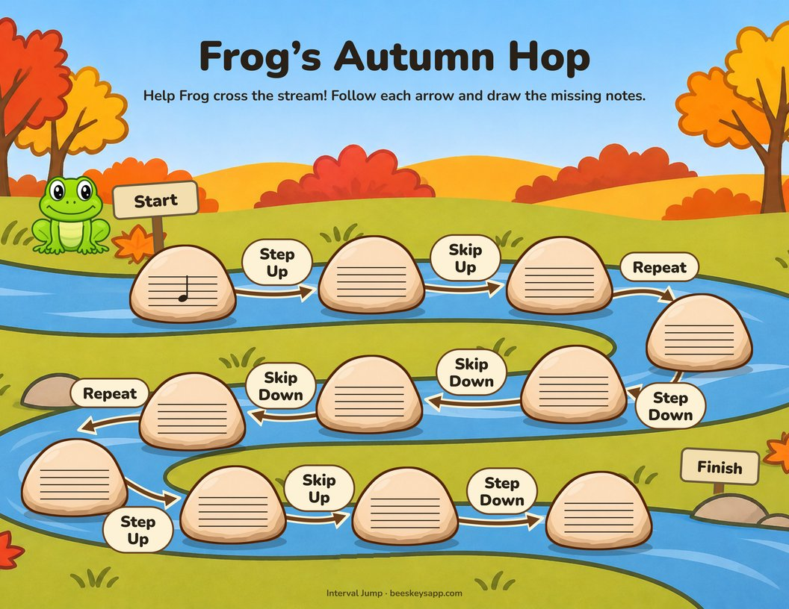
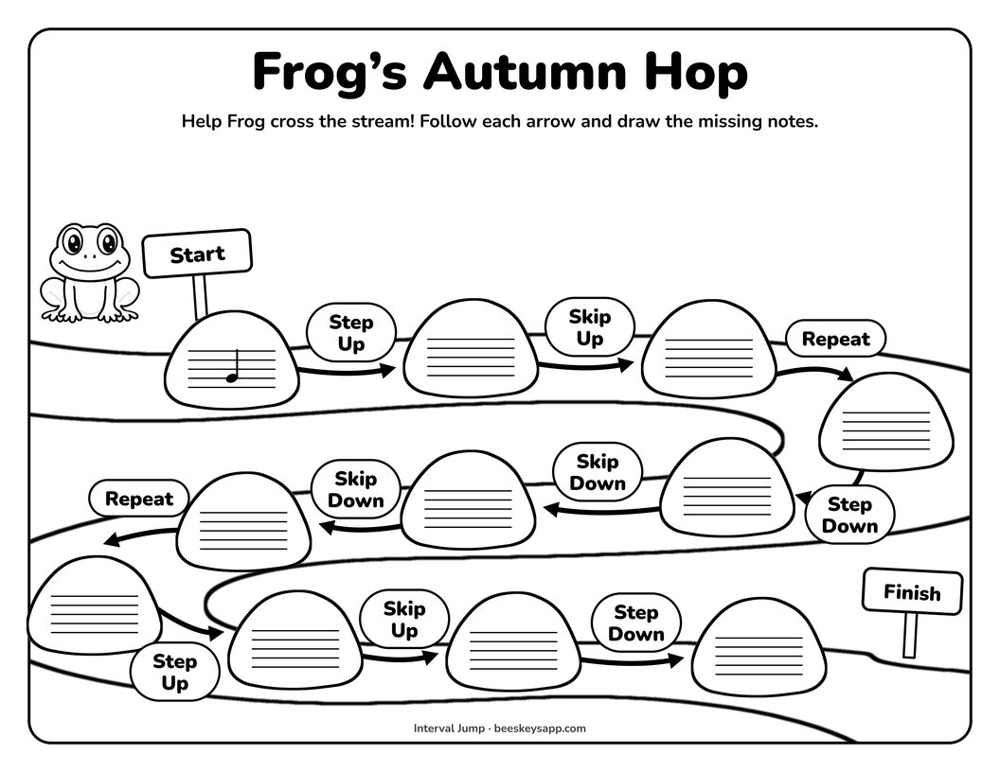
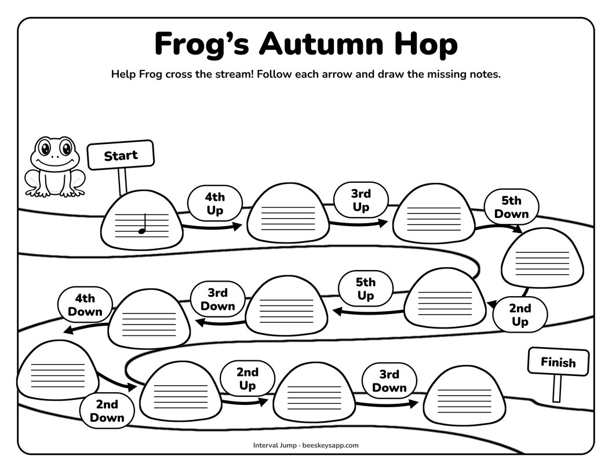
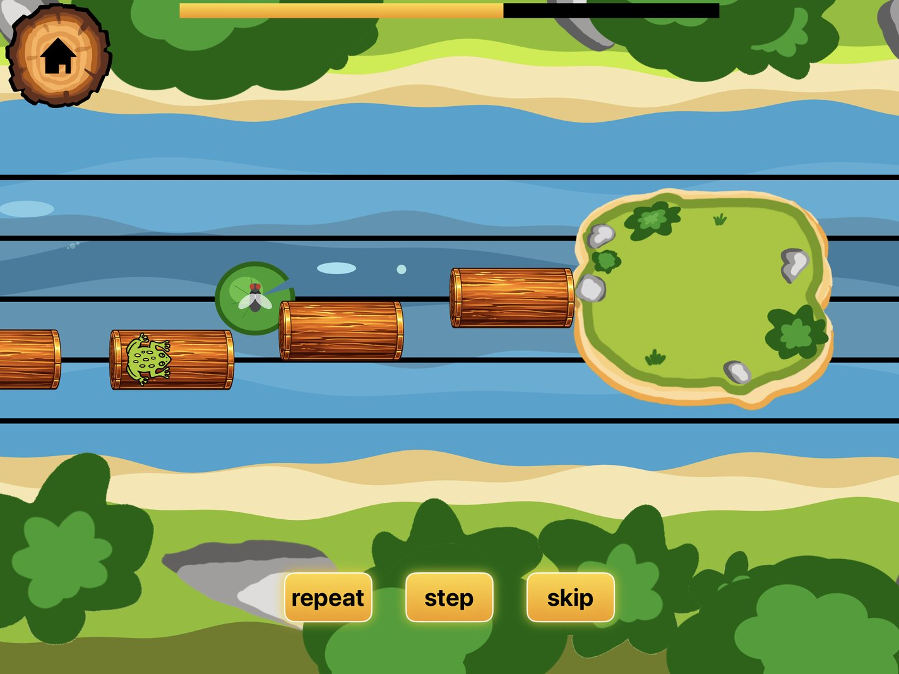
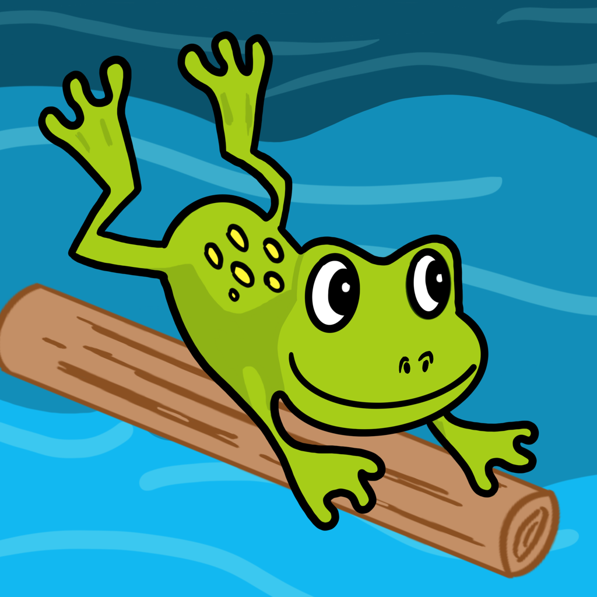

Free printable
Frog's Autumn Hop
An Interval Writing Activity
By Kristianna Callahan · Published November 9, 2026

Click to download the free PDFFrog needs help crossing the stream! Follow the directions between each stepping stone and draw the missing notes to help Frog hop safely to the other side.
There are two versions of this worksheet:
- Beginner: Repeats, steps, and skips
- Intermediate: Intervals from 2nds through 5ths
-

Beginner repeats, steps, and skips -
Intermediate 2nds through 5ths -

Beginner printer-friendly -

Intermediate printer-friendly
Extra Ways to Use This Worksheet
- Add a clef! Practice drawing treble and bass clefs on the stepping stones.
- Name the notes! Once students have completed the path, challenge them to name every note using the intervals as clues.
- Play the intervals! Play each interval at the piano as Frog hops from stone to stone.
- Write the melody! Transfer the completed notes onto one continuous staff, then play your new melody.
- Add a rhythm! Give each note a rhythmic value and turn Frog’s journey into a short composition.
Download both versions for free below!
Download the free printable
Then keep hopping with Interval Jump! 🐸
Practice recognizing intervals on the staff as Frog jumps from log to log in Interval Jump, our free music theory app.


Interval Jump
Read music fast
A frog crosses the river by leaping between notes on the staff. Repeat, step, and skip are free to play forever; Pro adds leaps, the 4th through 9th intervals, and custom practice sessions.
Want more free music teaching resources?
I'm making more printables, games, and teaching resources. Send me a note and I'll pass new freebies your way.
Free · unsubscribe any time Send me new freebies
Opens your mail app. Your address is only ever used to send you the free resources.